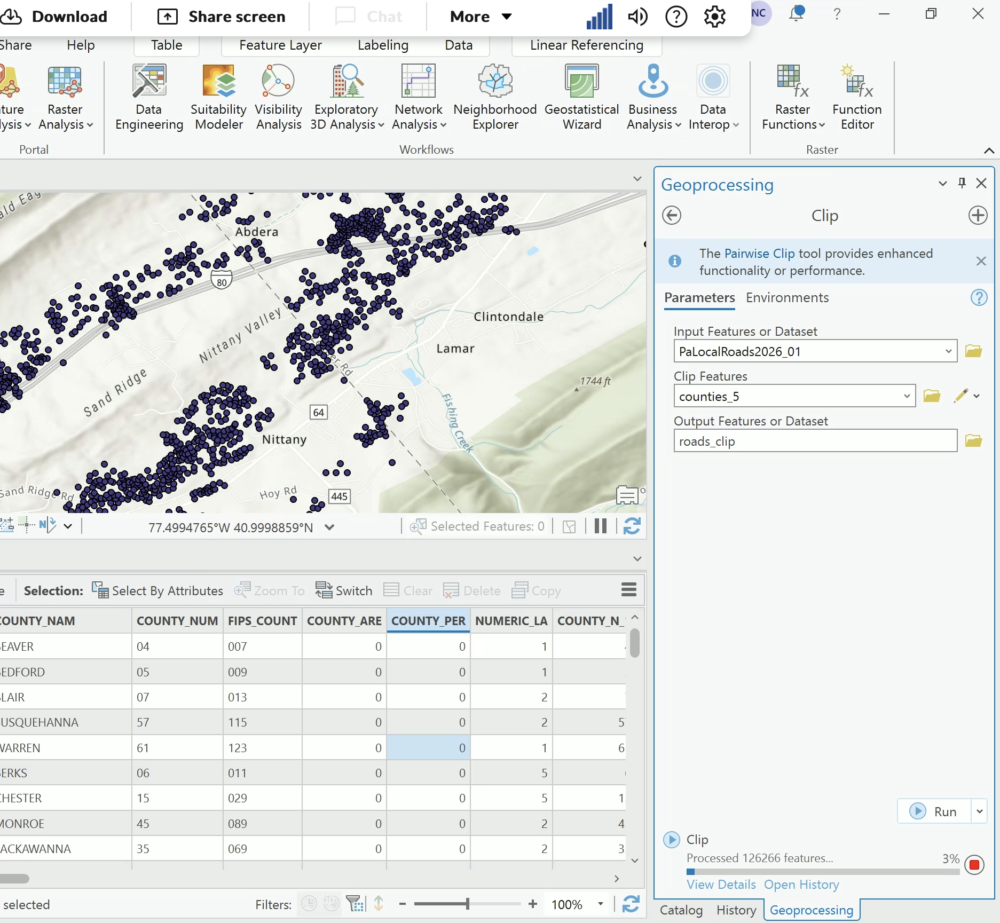
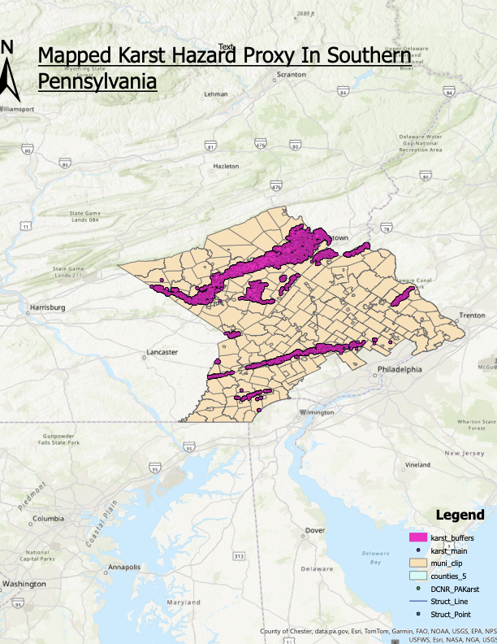
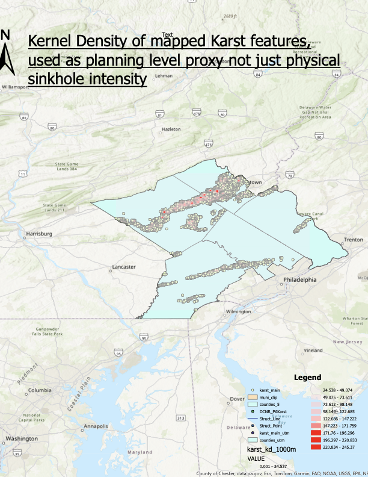

Animated risk field
Mapped karst points spiral into exposure pressure around critical facilities.
The motion layer turns the CATModel idea into a cinematic susceptibility field: dense karst clusters, buffer rings, and facility signals moving through the same hazard-exposure logic used in the final results.
30,623karst features
455within 1 km
0.957KHI rank rho
Real-world context
Karst hazard is physical ground behavior, not just a map layer.
These USGS field photos ground the dashboard in the real mechanisms behind the model: surface collapse, water movement into sinkholes, and drainage pathways through karst terrain.


GIS production evidence
ArcGIS preprocessing and map layouts are part of the reproducible project record.
These artifacts show the clipping workflow, county-scale hazard proxy layout, and density surface used to communicate karst susceptibility before the web dashboard and final deck were packaged.


project-assets/gis/.

Spatial screen
Karst susceptibility and exposed essential facilities
County comparison
Exposure pressure
Facility portfolio
Active essential assets
Core thesis
Karst is not modeled as a single event. It is modeled as a susceptibility surface that changes facility exposure priorities.
The project keeps the geospatial stack intentionally light, then uses buffer exposure, local mapped-feature density, and facility criticality to identify where a more detailed site investigation would matter most.
Full project idea
From geology layer to CATModel screening workflow
The project begins with a practical problem: southeastern Pennsylvania has mapped karst features, but a final-project risk model needs a repeatable way to connect that hazard information to hospitals, schools, police, and fire/EMS facilities. The dashboard treats the DCNR karst inventory as a susceptibility proxy, not a forecast of individual sinkholes.
The final analysis links 42 PA Department of Health hospital points and 1,675 USGS essential-structure points to the mapped karst inventory. Each facility receives a nearest-karst distance, a buffer score, a 1 km local density score, and a type-based criticality score. Those facility scores roll up to real PennDOT municipality polygons for the Karst Hazard Index.
The result is a classroom-scale CATModel that is transparent enough to defend in a presentation and structured enough to improve later with fragility curves, downtime models, climate covariates, and calibrated loss functions.
Research question
Where do mapped karst susceptibility and essential-facility exposure overlap strongly enough to justify deeper engineering review?
Hazard
Mapped karst feature count and density
Exposure
Facility proximity to mapped features
Criticality
Facility function and disruption relevance
Uncertainty
Rank shifts under alternate KHI weights
Project history
How the model is built
1Scope five counties with high project relevance and manageable data volume.
2Parse the DCNR DBF directly so the workflow avoids GeoPandas installation friction.
3Clip DOH hospitals and USGS essential structures to the five-county study area.
4Score exposure using distance buffers, local mapped-feature density, and facility criticality.
5Aggregate into municipal KHI rankings and test whether priorities survive changes in model weights.
6Package results as tables, figures, a slide deck, GitHub repository, and Vercel dashboard.
Cinematic model layer
The animation turns the static CATModel into a visible hazard-exposure field.
The full-width motion field above is intentionally lightweight canvas code: it loads after the page shell, respects reduced-motion settings, and uses the same county selection and buffer threshold as the dashboard controls.
Particlesmapped karst concentration and local density
Ringsscreening buffers around facility exposure
Signalscritical-facility locations animated as pulse points
Purposepresentation impact without changing the underlying math
Field photo gallery
Real karst processes behind the screening layer.
USGS field imagery helps connect the mapped inventory to actual mechanisms: collapse, rapid drainage, and hydrologic routing through soluble rock terrain.
Literature matrix
What each source contributes
IPCC 2014Risk framing as interaction of hazard, exposure, and vulnerability.
USGS natural-hazards workScreening-level hazard assessment and vulnerability communication.
Reese & Kochanov, PAGSPennsylvania karst and sinkhole context for engineering geology.
PASDA / DCNRMapped karst inventory used as the primary susceptibility layer.
Census, DOH, NCESPopulation and facility context used to motivate exposure categories.
Why karst matters here
Southeastern Pennsylvania combines carbonate geology with dense public infrastructure.
Karst risk is spatially uneven. It can be quiet for long periods, then become important when subsurface voids, drainage change, construction disturbance, or water movement concentrate near a structure. A county-scale model cannot resolve the subsurface mechanism, but it can flag where exposure is clustered.
That makes the project a screening model: useful for prioritization, not for parcel-level design. The dashboard makes that boundary explicit by separating mapped susceptibility, essential-facility exposure, KHI ranking, and uncertainty.
Conceptual lineage
From mapped feature to decision cue
Mapped karst
Susceptibility proxy
Facility exposure
Criticality weighting
KHI ranking
Engineering follow-up
Data lineage
Source to result table
DCNR_PAKarst.dbflat, lon, karst type
karst_study_area.csvfiltered to Lehigh, Berks, Bucks, Montgomery, Chester
PA DOH hospitals42 real hospital points in the study area
USGS essential structures1,675 real school, fire/EMS, police, and correctional structure points used for exposure screening
PennDOT municipalities287 real municipality polygons used for KHI ranking
Final result tablesdistance buffers, hospital nearest-karst table, county exposure, KHI, sensitivity, and loss proxy
The website is keyed to regenerated real-data outputs. County and municipality assignment use polygon boundaries when the PennDOT files are present; otherwise the Python pipeline labels fallback runs as screening-grade.
Model formula
KHI = 100 x (wH H + wE E + wC C)
Hmin-max normalized municipal karst density
Emin-max normalized exposed-facility count within 500 m
Cmin-max normalized criticality-weighted exposure
Data inventory
Audit status before final outputs
Reproducible pipeline
Run order
01 Load karst
02 Facilities
03 Exposure
04 KHI
05 Figures
06 Presentation
python scripts/run_all.pyExposure lab
Facility type filter
Filtered exposure
County pressure under active filters
Buffer distribution
Facilities by proximity class
Critical facilities
Hospitals within 1 km of mapped karst
KHI Lab
Custom weight test
Rank sensitivity
Top municipalities
Interpretation
Stable high ranks are stronger screening targets.
Municipalities that stay near the top under base, hazard-led, exposure-led, and critical-facility weights are more robust screening priorities. Large rank movement is a useful uncertainty flag because priority depends on which CATModel dimension is emphasized.
Scenario builder
Stress the assumptions
Scenario result
Moderate stress case
Loss proxy
Relative scenario loss by county
GIS evidence
Preprocessing artifacts supporting the final CATModel.
The project record includes ArcGIS clipping evidence and two exported map layouts. These visuals are preserved because they show the actual GIS workflow behind the Python/Vercel packaging.
Deliverables
Project artifacts
GitHub repository
Final results brief
Project audit
Final PowerPoint deck
Table 1 exposure CSV
Table 2 top facilities CSV
Table 3 county summary CSV
Table 4 KHI CSV
Table 5 sensitivity CSV
Table 6 loss proxy CSV
Python CATModel pipeline
Matplotlib figures
15-slide PowerPoint generator
Vercel dashboard
Limitations
Use as screening, not design.
- Mapped karst is a susceptibility proxy.
- Facility locations depend on public-source coordinate completeness and classification consistency.
- No fragility curves or service-area disruption model are included.
- Exposure buffers identify screening priority, not site-specific foundation performance.
Next upgrades
How this becomes more realistic
Facility inventory QACross-check DOH, USGS, NCES, and county public-safety records facility by facility.
Service geometryAdd hospital catchments, school districts, EMS response zones, and redundancy metrics.
Geotechnical covariatesAdd carbonate geology, soil, drainage, slope, and historic subsidence data.
Fragility and lossMove from relative loss proxy to damage states, downtime, and repair cost.